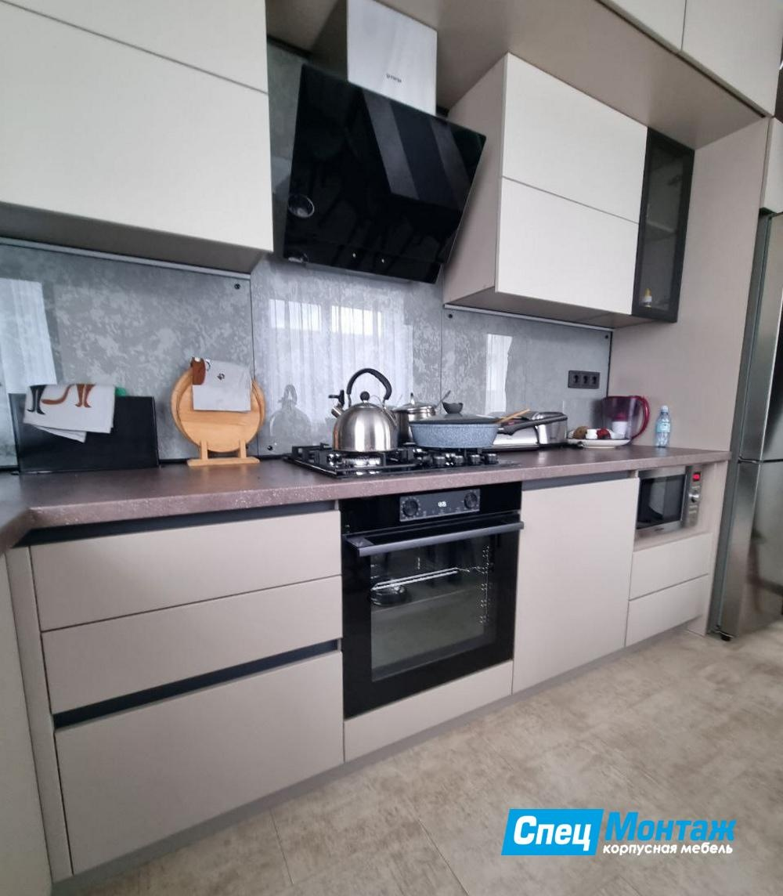

СпецМонтаж — Мебель · СмоленскКорпусная мебель.
Корпусная мебель.
Под ваше помещение.
Кухни, шкафы и другая корпусная мебель по индивидуальным размерам в Смоленске. Обсудим проект и подготовим расчёт.
Рассчитать мебель
ПРИМЕРЫ РЕШЕНИЙВнешний вид.
Внешний вид.
И то, что внутри.
Продуманное хранение начинается с расположения секций и того, как они открываются. Рассмотрите примеры мебели и обсудите конструкцию под своё помещение.
Обсудить мой заказ